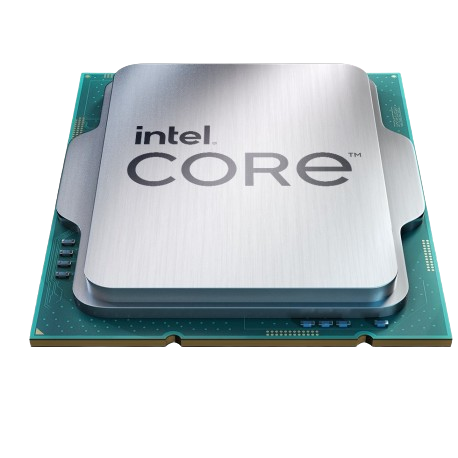

Intel Core i9-13900K
|
Intel Core i9-13900K Процесор Intel Core i9 тринадцятого покоління моє 16 ядер та 24 потоки з базовою частотою 3.5 Ггц, а максимально понад 5 Ггц. Також цей процесор має інтегровану відеокарту Intel Xe, яка забезпечує гарну продуктивність, але всеж дискретні відеокарти будуть мати більшу продуктивність. мінімально просесор споживає 125 Вт, та має підтримку DDR4, та DDR5. |